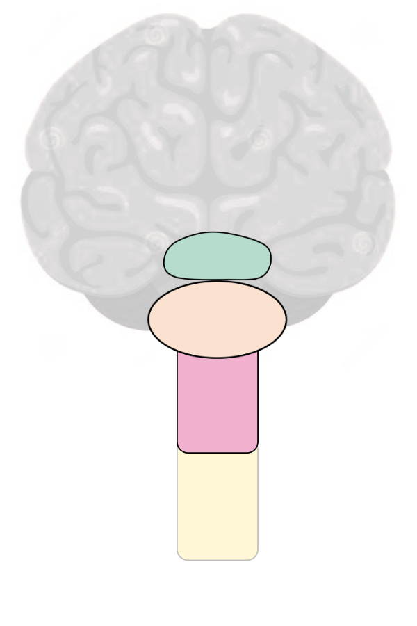
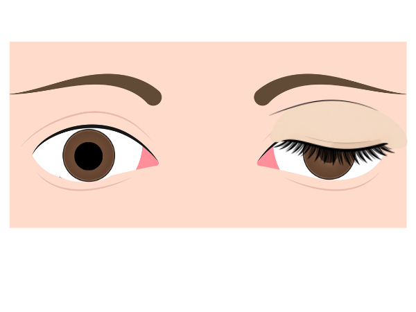
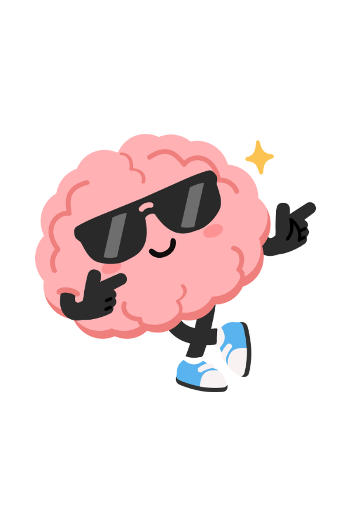

Case 2
Lateral Medullary Games
Welcome to your next escape room. By completing this room you will become a brainstem ninja. We'll start by grounding ourselves in a brainstem roadmap and then matching the clinical signs to the lesions.
Welcome to your next escape room. By completing this room you will become a brainstem ninja. We'll start by grounding ourselves in a brainstem roadmap and then matching the clinical signs to the lesions.
The brainstem has three components — match the brainstem area with the correct label.
Drag each label onto its correct region

Labels — drag onto diagram
Okay now we have the brainstem tiers sorted — place the cranial nerve nuclei in their correct brainstem location.
Drag each CN from the pool into its brainstem level
CN pool — drag into tower
Which of the following is true regarding lesions which affect cranial nerve nuclei in the brainstem?
Which of the following cranial nerves would be impacted by a lesion in the cervical spinal cord as opposed to the brainstem?
In the brainstem there are two main structures for our clinical skills — the cranial nerve nuclei and the tracts that run up and down. We've covered the levels of CN nuclei, but we also need to know whether these are located medially or laterally.
Drag the cranial nerves and tracts to their correct location:
Chip pool
| Lateral | Medial | |
|---|---|---|
| Midbrain | ||
| Pons | ||
| Medulla | ||
| Tracts (all levels) |
The ascending and descending tracts have particular points of crossing over (decussation) which are important for our clinical problem solving.
Which two tracts crossover in the medulla of the brainstem? Select all that apply, then check.
You placed the sympathetic tract in the lateral brainstem in Stage 5 — a lesion here will lead to Horner's syndrome. But what does that actually mean?
Let's make sure we know the clinical features — not just for the neuro exam, but for the respiratory and thyroid exams too!
What do you notice about this patient's eyes?

Part A — Tick all that apply
Which of the following are features of Horner's syndrome?
Using everything you've learned — which of these represents a LEFT sided lateral medullary syndrome?
Each option shows the same six examination findings. Pick the one that fits a left-sided lateral medullary lesion.

Well done — you have officially bossed the lateral medullary syndrome and become a brainstem ninja.
Time taken
—
Target: 15 minutes
Midbrain → Pons → Medulla. The cranial nerve nuclei follow: CN 3–4 in midbrain, CN 5–8 in pons, CN 9–12 in medulla.
A lesion of a CN nucleus in the brainstem always produces ipsilateral cranial nerve signs — the fibres haven't crossed yet.
CN 11's clinical function (SCM and trapezius) localises to the cervical spinal cord — medullary lesions don't cause CN 11 palsy.
Corticospinal (motor) and dorsal columns run medially. Spinothalamic, Spinocerebellar, Spinal Trigeminal and Sympathetic tracts run laterally.
Corticospinal tract and dorsal columns cross in the medulla. The spinothalamic tract has already crossed (in the spinal cord), so it carries contralateral body signals by the time it reaches the brainstem.
Ipsilateral CN signs (uvula deviation away from lesion, hoarseness), ipsilateral Horner's, ipsilateral cerebellar signs, ipsilateral face pain/temp loss, contralateral body pain/temp loss. No motor weakness or tongue deviation — those are medial structures.